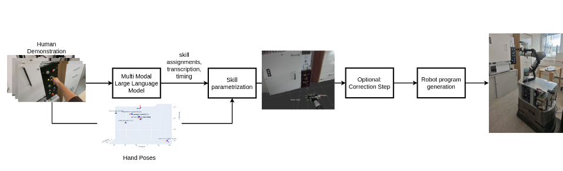

Learning Machine Tending from Demonstration with Multimodal LLMs

Venue. CASE (2025)
Materials.
DOI
PDF [link]
Abstract. Driven by the need for increased efficiency and flexibility in manufacturing, particularly in demanding sectors like semiconductor production, this paper presents a framework for intuitive robot programming using multimodal Large Language Models (mLLMs). Our methodology enables robot programming through human demonstration, using AR glasses to capture video, audio narration, and hand poses of an operator performing a machine tending task. This multimodal data is processed by an mLLM, which segments the demonstration temporally, transcribes narration, assigns low-level robot skills from a predefined library, provides reasoning for these assignments, and identifies interacted objects. Crucially, hand poses and pose of the robot according to the machine (via QR codes) are used to parameterize the selected skills, ensuring accurate translation to the robot’s workspace. These parameterized skills are then automatically compiled into executable programs for a UR5e robot on a mobile base. Experimental evaluation in a machine tending scenario demonstrated high accuracy, with a median positional error of less than 4 cm between the robot’s executed actions (e.g., Press Button) and the corresponding physical locations of those interaction points in the environment. Although the framework allows high level of automation, its transparent, multi-stage design also allows for operator corrections, further enhancing precision.
Link to this page: